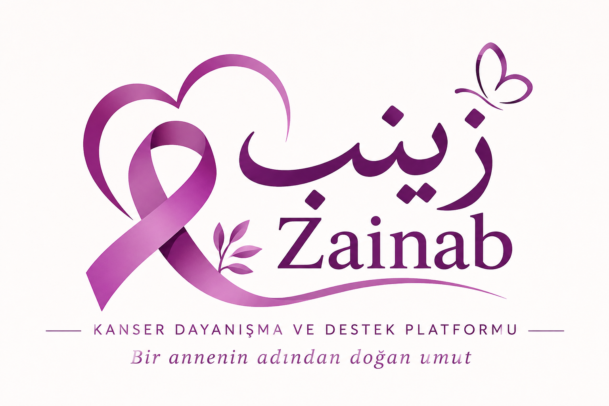

İlk tanı
Yeni tanı alanlar için ilk adımlar, sorular ve hazırlık
Bilgiye ulaş →ZAINAB, Zeynep Öner’in anısını yaşatmak için geliştirilmiş; kanserle yaşayan bireylerin ve yakınlarının güvenilir bilgiye, haklarına ve destek kaynaklarına ulaşmasını kolaylaştırmayı amaçlayan bir girişimdir.
Her kanser deneyimi farklıdır. Bilgiye, gündelik desteğe veya haklarınızla ilgili yönlendirmeye ihtiyaç duyuyor olabilirsiniz.
Yeni tanı alanlar için ilk adımlar, sorular ve hazırlık
Bilgiye ulaş →Duygular, iletişim ve uzman desteğine erişim
Bilgiye ulaş →Sosyal yardım arayışı, SGK ve haklara başlangıç
Bilgiye ulaş →Yakınlar, ebeveynler, çocuklarla iletişim
Bilgiye ulaş →Ulaşım, ev işleri, yorgunluk ve bakım yükü
Bilgiye ulaş →İşe ve eğitime dönüş, rehabilitasyon ve takip
Bilgiye ulaş →Önce sizi ilgilendiren konuyu seçin. Tedaviniz ve tıbbi kararlarınız için sağlık ekibinizi esas alın; diğer ihtiyaçlarınız için doğrulanabilir kurumlara ulaşın.
İlk adımları inceleDoktor randevusu için sorularınızı not alın.
Kurum ve başvuru yollarını inceleyin.
Yakınlarınızdan somut yardım talep edin.
Güncel, resmî ve uzman kaynaklara bakın.
Norveç’teki hasta örgütlerinin bütüncül destek yaklaşımından ilham alarak Türkiye'deki gündelik ihtiyaçlara uygun başlıkları bir araya getirdik.
Bakım sorumluluğunu paylaşma, konuşma, sınır koyma ve destek alma.
Bilgiye ulaş →Sevilen bir kişinin anısını yaşatırken destek kaynaklarına ulaşma.
Bilgiye ulaş →Tedavi sonrası çalışma, eğitim, yorgunluk ve uyum süreci.
Bilgiye ulaş →
ZAINAB'ın adı Zeynep'ten doğdu. Bu proje, onun anısını yaşatmanın yanı sıra kanserle yaşayan insanlara ve ailelerine doğru zamanda doğru bilgiye ulaşabilecekleri bir alan sunmayı hedefliyor.
Bu sayfada anlatılanlar bir anma girişiminin tasarım ve hizmet hedefleridir; kurulmuş bir vakıf veya faaliyette olan yardım kuruluşu iddiası değildir.
Hikâyemizi okuTürkiye’deki resmî kurumlar ve sivil toplum kuruluşları için bir başlangıç dizini. Sağlık, sosyal güvence ve yardım koşulları zaman içinde değişebilir.
Türkçe bilgilendirme içerikleri, gezinilebilir destek rehberleri, dış kaynak bağlantıları ve Zeynep Öner’in anma hikâyesi.
Bağış tahsilatı, hasta başvuru formları, gönüllü eşleştirme, canlı uzman danışmanlığı ve resmî hizmet programları.
Tanıdan tedavi sonrasına; hasta haklarından aile yaşamına kadar güvenilir bilgiye giden yollar. Buradaki bilgiler tıbbi tavsiye veya ZAINAB tarafından sunulan aktif hizmetler değildir.
İlk günlerde neler yapabilirsiniz?
Tanı ve tedavi kararları sağlık ekibinizin görevidir. Randevulara hazırlanmak, güvenilir bilgi kaynaklarını bulmak ve destek istemek süreci daha yönetilebilir kılabilir.
Yalnız kalmamak için bir başlangıç
Kaygı, belirsizlik ve sosyal zorlanmalar kişiden kişiye değişir. Herkesin tepkisi farklıdır; duyguların paylaşılması veya uzman desteği istemek mümkündür.
Başvuru yolunu belirleyin
SGK güvenceniz, gelir durumunuz, ikametiniz ve kişisel koşullarınız hangi hizmetlere uygun olabileceğinizi etkileyebilir. Bu site sizin adınıza uygunluk kararı vermez.
Bakım veren kişinin de desteğe ihtiyacı olabilir
Kanser ailedeki işleri, planları ve ilişkileri etkileyebilir. Yardımı somut görevlere bölmek ve sorumlulukları paylaşmak yükü azaltabilir.
Küçük ihtiyaçlar büyük fark yaratabilir
Randevuya ulaşım, yemek, alışveriş, ev işleri veya çocuk bakımı gibi konular için güvenilir yakın çevrenizle bir destek planı oluşturabilirsiniz.
Yeni bir denge oluşturmak
Tedavi sonrası yaşamda yorgunluk, duygusal yük, iş yaşamına uyum veya takip randevuları gündeme gelebilir. Her kişinin iyileşme ritmi farklıdır.
Doğru taramaya doğru kaynaktan ulaşın
Türkiye’de KETEM ve ilgili sağlık birimlerinde ulusal program kapsamındaki bazı kanser türleri için ücretsiz taramalar yapılır. Tarama yaşları, sıklığı ve uygunluğu için güncel resmî yönlendirmeyi esas alın.
Bilgi almak ve başvuru yapmak
Hastalar, sağlık hizmeti alırken bilgi alma, rıza ve mahremiyet gibi haklara sahiptir. Başvuru süreçlerinin ayrıntıları ilgili mevzuata ve kuruma göre değerlendirilir.
Hatıraları yaşatmak için alan açmak
Yakınını kaybeden insanların yas deneyimleri birbirine benzemez. Duyguların ifade edilmesi, ihtiyaç duyulduğunda profesyonel destek ve toplumsal dayanışma önemlidir.
Yardımın güvenli yolu
Akran desteği gibi programlar eğitilmiş gönüllüler, açık sınırlar, gizlilik ve uygun gözetim gerektirir. ZAINAB’da eşleştirme henüz açılmadı.
Yaşam kalitesini merkeze almak
Palyatif bakım, hastalığın farklı aşamalarında ağrı ve diğer zorlayıcı belirtilerin değerlendirilmesi ile kişinin ve ailesinin desteklenmesini kapsayabilir. Uygun hizmetleri tedavi ekibinize sorun.
Kişiye özel öneri alın
Kanser tedavisi sırasında beslenme ve hareket ihtiyaçları kişiye ve tedaviye göre değişir. Genelleştirilmiş diyetler veya takviye önerileri yerine onkoloji ekibinden yönlendirme alın.
Bu içerikler genel bilgilendirme amaçlıdır. Kaynak kontrolü: 24 Kasım 2026. Resmî kaynaklara bakın.
Türkiye’de başvurulabilecek resmî adresler ve ZAINAB'ın hizmet tasarımına ilham veren Norveçli kuruluşlar. Dış bağlantılar yeni sekmede açılır.
Sağlık, kanser programları, hasta hakları ve resmî yönlendirmeler.
Kaynağı aç ↗Ücretsiz tarama hizmetleri ve ulusal tarama programına ilişkin bilgi.
Kaynağı aç ↗Sağlık güvencesi, hizmet kapsamı ve mevzuat.
Kaynağı aç ↗Uygun koşullarda sosyal yardım başvurusu için resmî giriş noktası.
Kaynağı aç ↗Hastanelerde Hasta Hakları Birimi ve SABİM kanalları konusunda bilgi.
Kaynağı aç ↗Lösemi ve kanserle ilgili toplumsal destek programlarını incelemek için.
Kaynağı aç ↗Kanser farkındalığı, danışmanlık ve destek hizmetlerine ilişkin kurum bilgisi.
Kaynağı aç ↗Danışmanlık, haklar, aile ve yaşam destekleri için model örneği.
Kaynağı aç ↗Akran desteği, gençler ve gönüllü eğitimi örnekleri.
Kaynağı aç ↗Uzman yönlendirmesiyle fiziksel aktivite ve rehabilitasyon modeli.
Kaynağı aç ↗Kanserle yaşayan çocuklar ve aileler için destek yaklaşımı.
Kaynağı aç ↗Tedavi sonrası yaşam ve iş hayatına dönüş programları.
Kaynağı aç ↗İlham aldığımız ilkeler: danışmanlık ve haklara yönlendirme, gönüllü ve akran desteği, aile odaklı yaklaşım, rehabilitasyon ve işe dönüş. Bu modellerin hiçbiri izinsiz biçimde kopyalanmamış; ZAINAB'ın öneri mimarisine uyarlanmıştır.
Son masa başı kaynak kontrolü: 24 Kasım 2026. Kuruluşların her sayfasının eksiksiz tarandığı iddia edilmez.
ZAINAB adının arkasında bir isim ve güçlü bir niyet var: sevgiyi, saygıyı ve dayanışmayı yeni bir anlamla yaşatmak.
Bu web sitesi Zeynep Öner’in anısına hazırlanmıştır. ZAINAB adı, Zeynep isminin başka dillerdeki biçimiyle kurulan bir bağdan doğar.
Amaç, Türkiye'de kanserle yaşayan bireyler ve yakınları için anlaşılır bilgiye ve güvenilir destek kaynaklarına erişimi kolaylaştıracak bir dayanışma yapısı geliştirmektir.
Burada Zeynep Öner’in özel yaşamına dair doğrulanmamış biyografik ayrıntılara yer verilmemiştir. Aile tarafından onaylanan bilgiler ileride bu bölüme eklenebilir.
ZAINAB, Zeynep adına bağlanan uluslararası bir yazılış. Anma hikâyesini görünür kılan bir marka tercihi.
Z harfi ve birbirine yakın iki insan formu; yardım istemenin, yardım etmenin ve insan onuruna saygının görsel ifadesi.
Zeynep isminin Arapça yazılışı, kültürel kökenini hatırlatan ayrı bir görsel unsur olarak korunur. Ana marka adı ZAINAB’dır.
ZAINAB’ın bugün ne yaptığını, ne yapmadığını ve ileride hangi koşullar oluşursa gelişebileceğini açıkça anlatıyoruz.
24 Kasım 2026 itibarıyla ZAINAB.org bir web sitesi ve hizmet tasarımı prototipidir. Türkiye'de resmî dernek veya vakıf tescili, kurum adına bağış yetkisi, aktif ekip, danışmanlık hattı ya da yardım dağıtımı bu proje kapsamında doğrulanmamıştır.
Şu aşamada ZAINAB üzerinden para gönderilmesini talep etmiyoruz. Kanserle yaşayan kişilere destek olmak isteyenler, resmi statüsü ve faaliyetleri doğrulanabilen kuruluşların kendi web sitelerini inceleyebilir.
Güvenilir kaynak ve kuruluş dizinine geçin →
Bu statik web sitesi kullanıcı hesabı, başvuru formu, çerez tabanlı izleme ya da sunucuya bilgi gönderme işlevi içermez. Ziyaretçi web sunucusu üzerinde barındırılırsa, sunucu sağlayıcının standart erişim kayıtları kendi politikalarına göre oluşabilir; canlı yayından önce barındırma ve veri işleme koşulları ayrıca açıklanmalıdır.
İçerikler eğitim ve yönlendirme amaçlıdır. Tanı koyma, tedavi önerme, ilaç değiştirme veya kişisel sağlık durumuna karar verme amacı taşımaz. Tıbbi sorular için sağlık profesyonellerine başvurun. Acil durumda Türkiye'de 112.
ZAINAB, bağlantı verilen Norveç veya Türkiye kuruluşları tarafından kurulmuş ya da onaylanmış olduğunu iddia etmez. İlham alınan destek fikirleri bağımsız bir tasarım çalışması olarak değerlendirilmiştir.
Son güncelleme: 24 Kasım 2026.